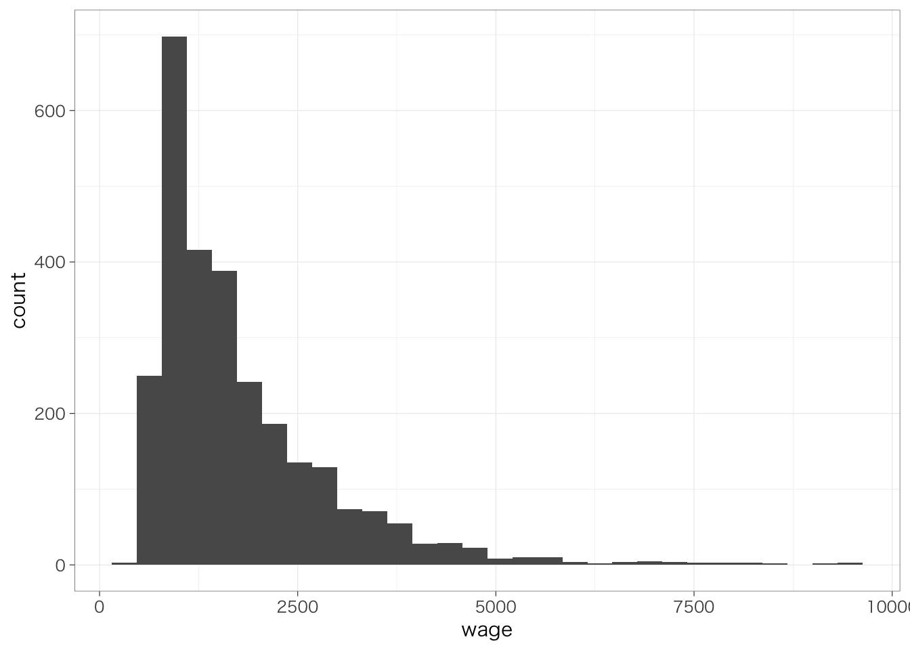
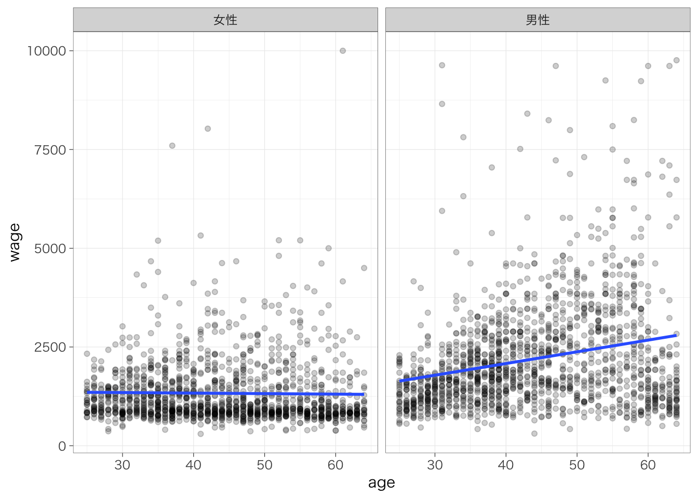

Chapter 6 重回帰分析の活用
library(tidyverse)
library(modelsummary)6.1 交絡要因の統制
いま、高い学校段階を終えたこと（学歴）がどれくらい賃金を高めるのかを知りたいとする。もっともシンプルな方法が、前回みたように（単）回帰分析で学歴ごとに賃金を比較するという方法だ。
しかしこの方法では、学歴の効果を知るには不十分かもしれない。というのも、データには25歳から64歳まで幅広い年齢の対象者が含まれており、また男性も女性も含まれている。学歴別に書いた次の散布図を見てみよう：
piaac %>%
filter(is.na(educ) == FALSE) %>%
ggplot(aes(x = age, y = logwage, color = gender)) +
geom_point(alpha = 0.3) +
facet_wrap(~educ) +
labs(color = "")
高学歴化が進んだ影響で、中学卒の人には年齢の高い（古い年の生まれの）人が多く、短大高専や大学卒の人には年齢の低い人が多い。年齢が高くなるにつれて賃金が高くなるという傾向があるから、たんに学歴ごとに平均値をとったときには、このような年齢分布の違いは、中学卒の見かけの賃金を高く、短大高専卒や大学卒の見かけの賃金を低く見せるだろう。
性別も重要だ。たとえば短大高専卒では男性よりも女性が多く、大学卒では女性よりも男性が多い。男性のほうが（さまざまな理由によって）女性よりも賃金高い傾向があるから、このような性別分布の違いは、短大高専卒の見かけの賃金を低く、大学卒の見かけの賃金を高く見せるだろう。
以上のような分布の違いを一定としたうえで（統制 controlして、ともいう）学歴と賃金の関係をみることができたなら、「学歴はどの程度賃金を高める効果を持つのか」という問いの答えに近づくことができる。重回帰分析は、こうしたモチベーションに答えるための方法だ。
このときのモチベーションを図にすると、次のようなかたちになる。

Xを学歴、Yを賃金、Zを性別や年齢と考えよう。知りたいのは学歴が賃金に与える効果（X -> Y）だが、その背後にはXにもYにも影響する要因Z（Z -> X、Z -> Y）が存在する。そのため、学歴が賃金に与える効果をみたいのならば、Zを一定とする必要がある。このように、XとYの両者に影響する要因を交絡要因 confounderとよぶ。
一般に、重回帰分析の式は次のように書ける。
\[ y = \beta_0 + \beta_1x_1 + \beta_2x_2 + \cdots + \beta_kx_k \]
係数\(\beta_1\)は、他の変数\(x_2, \cdots, x_k\)を一定としたうえで、\(x_1\)が1単位高いと\(y\)がどれだけ高いのかを示す。表記上xとzを使い分けたりということはしないが、先に述べたように、複数の変数を使うときの回帰分析では、関心のある変数xと、統制したい変数zというふうに別々の役割があるということが多い。
6.2 結果の比較と解釈
性別や年齢といった交絡要因を考慮しない単回帰分析と、重回帰分析を比較してみよう。
reg_res1 <- lm(data = piaac, logwage ~ educ)
reg_res2 <- lm(data = piaac, logwage ~ educ + gender + age + I(age^2))
msummary(list(reg_res1, reg_res2),
stars = TRUE,
coef_rename = c("(Intercept)" = "切片",
"educ高校" = "高校（vs. 中学）",
"educ短大高専" = "短大高専（vs. 中学）",
"educ大学大学院" = "大学大学院（vs. 中学）",
"gender男性" = "男性（vs. 女性）",
"age" = "年齢",
"I(age^2)" = "年齢2乗"),
gof_omit = "R2 Adj.|AIC|BIC|Log.Lik.|F")| Model 1 | Model 2 | |
|---|---|---|
| 切片 | 7.107*** | 5.123*** |
| (0.034) | (0.152) | |
| 高校（vs. 中学） | 0.071+ | 0.102** |
| (0.037) | (0.034) | |
| 短大高専（vs. 中学） | 0.099* | 0.224*** |
| (0.039) | (0.036) | |
| 大学大学院（vs. 中学） | 0.499*** | 0.463*** |
| (0.038) | (0.035) | |
| 男性（vs. 女性） | 0.431*** | |
| (0.018) | ||
| 年齢 | 0.075*** | |
| (0.007) | ||
| 年齢2乗 | −0.001*** | |
| (0.000) | ||
| Num.Obs. | 2882 | 2882 |
| R2 | 0.125 | 0.296 |
| + p < 0.1, * p < 0.05, ** p < 0.01, *** p < 0.001 |
Model 1とModel 2とでは、学歴の係数が違っていることがわかる。Model 1では、中学卒の人とくらべて高校卒では0.074（約7.4%ポイント）、短大高専卒（約9.7%ポイント）、大学大学院卒では0.497（約49.7%ポイント）、賃金が高いことがわかる。
一方で性別と年齢を一定としたModel 2では、学歴の係数は大きく異なっている。とくに、短大高専卒の係数に注目してみよう。Model 1と比べるとその係数はかなり大きくなっている。先にみたように、高学歴の人には（平均的にみて賃金が低い）若い人が多く、また短大高専卒には（平均的にみて賃金が低い）女性が多かった。これらの影響のために、中学卒との見かけの賃金の差（Model 1）は小さめに見えていた。しかし、これら性別と年齢の影響を除く（一定とする）ことによって、短大高専を卒業することによる賃金上昇をより正確に捉えることができるようになったといえる。その他の学歴についても、Model 1と比べると、学歴が賃金を高める効果の推定に近づいているといえる。
もちろん、性別や年齢だけではなくほかにもさまざまな要因が絡んでくるから、これだけでは学歴が賃金に与える効果を完璧に正しく推定しているというわけではない。しかし、このように要因を統制することで、学歴が賃金を高める効果の推定値に近づいていくことができる。
6.3 最小二乗法（OLS）（工事中）
重回帰分析の係数はやはり最小二乗法によって推定される。
6.4 媒介分析／要因分解
6.4.1 モチベーション
女性は男性と比べて賃金が低い（男女間賃金格差）。たとえばその原因には、(1) 女性が男性よりも教育水準（学歴）が低い、(2) 女性が男性よりもスキルレベル（ここでは、PIAACの試験で測定された数的思考力のスコアとする）が低い、ということがありえるだろう。このような原因を調べるというときにも、重回帰分析を活用することができる。
性別をX、賃金をY、学歴およびスキルレベルをMとすると、ここでのアイデアは次のような図に表すことができる。

性別が賃金に与える効果は、(1) 女性の教育水準やスキルレベルが低く、したがって賃金も低い（X -> M -> Y）という部分と、(2) 教育水準やスキルレベルを一定としてもなお女性のほうが賃金が低い（X -> Y | M）という部分とに分けることができる。このようにして、XとYの中間にある要因を考えることでグループ間の差や独立変数の効果を分けていくことを指して、媒介分析 mediation analysisや要因分解decompositionなどという。
piaac <- piaac %>%
mutate(female_d = if_else(gender == "女性", 1, 0))
reg_res1 <- lm(data = piaac, logwage ~ female_d)
reg_res2 <- lm(data = piaac, logwage ~ female_d + educ)
reg_res3 <- lm(data = piaac, logwage ~ female_d + educ + numeracy)
msummary(list(reg_res1, reg_res2, reg_res3),
stars = TRUE,
coef_rename = c("(Intercept)" = "切片",
"female_d" = "女性（vs. 男性）",
"educ高校" = "高校（vs. 中学）",
"educ短大高専" = "短大高専（vs. 中学）",
"educ大学大学院" = "大学大学院（vs. 中学）",
"numeracy" = "数的思考力"),
gof_omit = "R2 Adj.|AIC|BIC|Log.Lik.|F")| Model 1 | Model 2 | Model 3 | |
|---|---|---|---|
| 切片 | 7.542*** | 7.288*** | 6.687*** |
| (0.013) | (0.032) | (0.068) | |
| 女性（vs. 男性） | −0.477*** | −0.425*** | −0.407*** |
| (0.019) | (0.019) | (0.019) | |
| 高校（vs. 中学） | 0.105** | 0.031 | |
| (0.035) | (0.035) | ||
| 短大高専（vs. 中学） | 0.213*** | 0.116** | |
| (0.036) | (0.037) | ||
| 大学大学院（vs. 中学） | 0.446*** | 0.280*** | |
| (0.035) | (0.038) | ||
| 数的思考力 | 0.002*** | ||
| (0.000) | |||
| Num.Obs. | 2882 | 2882 | 2882 |
| R2 | 0.179 | 0.255 | 0.280 |
| + p < 0.1, * p < 0.05, ** p < 0.01, *** p < 0.001 |
Model 1では女性は男性に比して-0.477（約-48%）賃金が低いということがわかる。
Model 2では、学歴を追加している。学歴の係数は正であり、学歴が高いほど、賃金は高い傾向があるといえる。学歴を一定とすると、女性の係数は-0.425（約-43%）となり、これはModel 1の女性の係数よりも小さい。すなわち、女性の賃金が低いことの一部は、学歴が低いために賃金が低い、ということによって生じているということがわかる。
Model 3ではさらに数的思考力を追加している。数的思考力の係数は正であり、数的思考力のスコアが高いほど、賃金が高い傾向があるといえる。学歴と数的思考力を一定とすると、女性の係数は-0.407（約-41%）となり、やはりModel 1の女性の係数よりも小さい。すなわち、女性の賃金が低いことの一部は、学歴が低いために賃金が低いこと、数的思考力スコアが低いために賃金が低いことによって生じているということがわかる。しかしながら、これらの個人属性を一定としてもなお、男女間には非常に大きな賃金格差が存在する。
6.4.2 （発展）係数変化の可視化
女性の係数を図にして表すことによって、それぞれの要因を追加したときの係数の違いを視覚的に把握しやすくなる。broomパッケージを使うことで、回帰分析の推定結果から係数や信頼区間に関する値を抽出し、それを使って図を作成することができる。
install.packages("broom") #未インストールの場合のみ
library(broom)m1 <- tidy(reg_res1, conf.int = TRUE) %>%
mutate(model = "Model 1")
m2 <- tidy(reg_res2, conf.int = TRUE) %>%
mutate(model = "Model 2")
m3 <- tidy(reg_res3, conf.int = TRUE) %>%
mutate(model = "Model 3")
m1 %>%
bind_rows(m2, m3) %>%
filter(term == "female_d") %>%
ggplot(aes(x = model, y = estimate)) +
geom_point() +
geom_pointrange(aes(ymax = conf.high, ymin = conf.low)) +
geom_text(aes(label = round(estimate, digit = 3)), hjust = 1.2) +
ylim(-.6, 0) +
geom_hline(yintercept = 0, lty = 2) +
labs(x = "", y = "対数賃金の男女差", caption = "注：Model 1は性別のみ、Model 2は学歴を統制、Model 3はさらに数的思考力を統制。")
6.5 重回帰分析の実際
実際の論文では、交絡要因の統制と媒介分析の両方を考慮しながら分析されることが多い。すなわち、次のような図になる。

たとえば、学歴が高いと賃金が高い（X -> Y）のはなぜなのか知りたいとする。その原因の1つとして、学歴が高いとよりスキルレベルが高い（賃金の高い）職業につくことができるから（X -> M -> Y）、ということが考えられる。実際、学歴別に職業（ISCO 1-digit, 軍隊は除く）の分布を比べてみると、学歴が高いほど管理職や専門職といったスキルレベルの高い職業に就いている傾向があることがわかる。
piaac %>%
tbl_cross(educ, occupation, percent = "row")| Characteristic | occupation | Total | ||||||||
|---|---|---|---|---|---|---|---|---|---|---|
| 管理職 | 専門職 | 技術職・准専門職 | 事務補助 | サービス・販売 | 農林漁業 | 技能工 | 設備・機械運転・組立 | 単純作業 | ||
| educ | ||||||||||
| 中学 | 8 (2.5%) | 4 (1.3%) | 15 (4.7%) | 20 (6.3%) | 68 (22%) | 18 (5.7%) | 84 (27%) | 52 (16%) | 47 (15%) | 316 (100%) |
| 高校 | 57 (4.7%) | 41 (3.4%) | 152 (13%) | 209 (17%) | 332 (27%) | 33 (2.7%) | 159 (13%) | 147 (12%) | 81 (6.7%) | 1,211 (100%) |
| 短大高専 | 34 (4.1%) | 155 (19%) | 138 (17%) | 138 (17%) | 212 (26%) | 11 (1.3%) | 78 (9.4%) | 28 (3.4%) | 33 (4.0%) | 827 (100%) |
| 大学大学院 | 150 (14%) | 331 (31%) | 238 (22%) | 144 (14%) | 120 (11%) | 10 (0.9%) | 38 (3.6%) | 22 (2.1%) | 12 (1.1%) | 1,065 (100%) |
| Total | 249 (7.3%) | 531 (16%) | 543 (16%) | 511 (15%) | 732 (21%) | 72 (2.1%) | 359 (11%) | 249 (7.3%) | 173 (5.1%) | 3,419 (100%) |
先に確認したように、学歴と賃金の間には性別や年齢といった交絡要因が存在する（Z -> X, Z -> Y）。なので、あらかじめこれらを統制しておいたうえで、学歴による賃金の差が職業の違いによってどの程度説明されるのかというのをみる必要がある。
実際の分析結果は次のようになる。
reg_res1 <- lm(data = piaac, logwage ~ educ + gender + age + I(age^2))
reg_res2 <- lm(data = piaac, logwage ~ educ + gender + age + I(age^2) + occupation)
msummary(list(reg_res1, reg_res2),
stars = TRUE,
coef_rename = c("(Intercept)" = "切片",
"gender男性" = "男性（vs. 女性）",
"educ高校" = "高校（vs. 中学）",
"educ短大高専" = "短大高専（vs. 中学）",
"educ大学大学院" = "大学大学院（vs. 中学）",
"age" = "年齢",
"I(age^2)" = "年齢2乗",
"occupation専門職" = "専門職（vs. 管理職）",
"occupation技術職・准専門職" = "技術職・准専門職（vs. 管理職）",
"occupation事務補助" = "事務補助（vs. 管理職）",
"occupationサービス・販売" = "サービス・販売（vs. 管理職）",
"occupation農林漁業" = "農林漁業（vs. 管理職）",
"occupation技能工" = "技能工（vs. 管理職）",
"occupation設備・機械運転・組立" = "設備・機械運転・組立（vs. 管理職）",
"occupation単純作業" = "単純作業（vs. 管理職）"),
gof_omit = "R2 Adj.|AIC|BIC|Log.Lik.|F")| Model 1 | Model 2 | |
|---|---|---|
| 切片 | 5.123*** | 6.218*** |
| (0.152) | (0.150) | |
| 高校（vs. 中学） | 0.102** | 0.034 |
| (0.034) | (0.032) | |
| 短大高専（vs. 中学） | 0.224*** | 0.060+ |
| (0.036) | (0.035) | |
| 大学大学院（vs. 中学） | 0.463*** | 0.191*** |
| (0.035) | (0.035) | |
| 男性（vs. 女性） | 0.431*** | 0.356*** |
| (0.018) | (0.019) | |
| 年齢 | 0.075*** | 0.056*** |
| (0.007) | (0.007) | |
| 年齢2乗 | −0.001*** | −0.001*** |
| (0.000) | (0.000) | |
| 専門職（vs. 管理職） | −0.190*** | |
| (0.037) | ||
| 技術職・准専門職（vs. 管理職） | −0.343*** | |
| (0.036) | ||
| 事務補助（vs. 管理職） | −0.502*** | |
| (0.038) | ||
| サービス・販売（vs. 管理職） | −0.661*** | |
| (0.037) | ||
| 農林漁業（vs. 管理職） | −0.726*** | |
| (0.088) | ||
| 技能工（vs. 管理職） | −0.577*** | |
| (0.041) | ||
| 設備・機械運転・組立（vs. 管理職） | −0.593*** | |
| (0.043) | ||
| 単純作業（vs. 管理職） | −0.747*** | |
| (0.049) | ||
| Num.Obs. | 2882 | 2882 |
| R2 | 0.296 | 0.405 |
| + p < 0.1, * p < 0.05, ** p < 0.01, *** p < 0.001 |
年齢と性別を統制したうえでの学歴の係数が、職業を考慮することによってどの程度変わるのかをみる。これをみると、Model 1と比べて、職業を一定としたModel 2では学歴の係数がかなり小さくなる。学歴が高いと賃金が高いという関連のかなりの部分が、職業分布の違いによって生じているようだということを、2つのモデルの学歴の係数の違いから読み取ることができる。